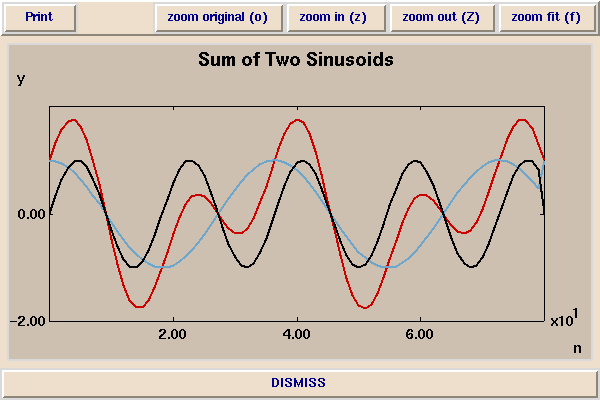
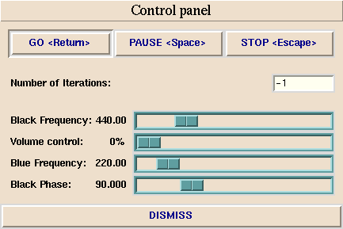

[ Demos ]
[ EECS 20 Home ]
[ Corresponding lecture ]
Sums of Sinusoids
This demonstration shows two sinusoids of different frequencies
and their sum.
The red sinusoid is the sum of the black and blue sinusoids:

The frequencies of the black and blue sinusoids and
the phase of the black sinusoid are controlled by a slider in the control
panel:

In this illustration, the frequency of the black sinusoid
is set to 440 Hz, which is the
frequency of the musical note A above middle C.
The blue sinusoid is one octave down, at 220 Hz, and hence is also
an A.
Observations
Changing the phase of the black sinusoid distinctly changes
the shape of the sum (the red sinusoid). However, it does not
change the sound. The human ear primarly hears the frequencies
of the sinusoidal components of a waveform. It does not hear
their phase (at least, not very well). Thus, it is not the shape
of a periodic waveform that we hear, but rather the frequencies of its
sinusoidal components.
Copyright © 1996, The Regents of the University of California.
All rights reserved.
Last updated: %D%,
comments to: eal@eecs.berkeley.edu